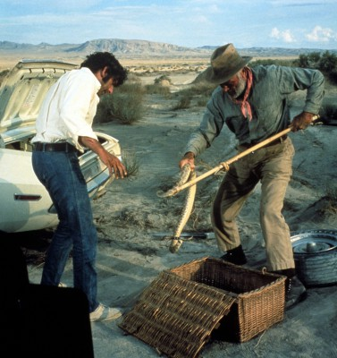

#12203 The Limey


 IMDB-Wertung: 7.0 / 10
IMDB-Wertung: 7.0 / 10  Tomatometer: 93
Tomatometer: 93  Metascore: 73
Metascore: 73 
Nach einem neunjährigen Gefängnisaufenthalt setzt der Brite Wilson zum ersten Mal seinen Fuß auf den nordamerikanischen Kontinent - fest entschlossen, die Schuldigen am rätselhaften Tod seiner geliebten Tochter Jenny ausfindig zu machen. Nichts und niemand vermag ihn aufzuhalten, denn er kennt nur ein Ziel: Rache. Und tatsächlich findet er schon bald eine Zielscheibe für seine Wut: den reichen Plattenproduzenten Valentine. Dieser, so wird erzählt, hatte mit Jenny ein großes Ding geplant...
Jahr: 1999
Dauer: 88 Minuten
FSK: 16
Land: USA Studio: Artisan EntertainmentTonspuren: DTS - ,
Untertitel:
Auflösung: 1080p (1920x1080) Größe: 7823 MB
Genre: Thriller, Drama, Krimi, Mystery
Regisseur:  Steven Soderbergh
Steven Soderbergh
Drehbuch: Lem Dobbs
Soundtrack: Cliff Martinez
Darsteller:
 Terence Stamp als Wilson
Terence Stamp als Wilson Lesley Ann Warren als Elaine
Lesley Ann Warren als Elaine Luis Guzmán als Eduardo Roel
Luis Guzmán als Eduardo Roel-  Barry Newman als Jim Avery
- Joe Dallesandro als Uncle John
 Nicky Katt als Stacy the Hitman
Nicky Katt als Stacy the Hitman Peter Fonda als Terry Valentine
Peter Fonda als Terry Valentine- Amelia Heinle als Adhara
 Melissa George als Jennifer 'Jenny' Wilson
Melissa George als Jennifer 'Jenny' Wilson William Lucking als Warehouse Foreman
William Lucking als Warehouse Foreman Matthew Kimbrough als Tom Johannson
Matthew Kimbrough als Tom Johannson- John Robotham als Rick (Valentine's Bodyguard)
- Steve Heinze als Larry (Valentine's Bodyguard)
 Nancy Lenehan als Lady on Plane
Nancy Lenehan als Lady on Plane Wayne Pére als Pool Hall Creep
Wayne Pére als Pool Hall Creep John Cothran als DEA Guy
John Cothran als DEA Guy Ousaun Elam als DEA Guy
Ousaun Elam als DEA Guy Allan Graf als Gordon (Valentine's Head Bodyguard)
Allan Graf als Gordon (Valentine's Head Bodyguard) Carl Ciarfalio als Warehouse Thug
Carl Ciarfalio als Warehouse Thug- George Marshall Ruge als Warehouse Thug
 Rainbow Borden als Warehouse Sweeper
Rainbow Borden als Warehouse Sweeper- Michaela Gallo als Young Jennifer
- Jose Perez als Teen Gun Dealer
- Alex Perez als Teen Gun Dealer
 Brandon Keener als Excited Guy
Brandon Keener als Excited Guy Johnny Sanchez als Valet
Johnny Sanchez als Valet- Brooke Marie Bridges als Child Actress
- Randy Lowell als Director
 Clement Blake als Pool Hall Bartender
Clement Blake als Pool Hall Bartender Ann-Margret als Terry Valentine's Ex-Wife (scenes deleted)
Ann-Margret als Terry Valentine's Ex-Wife (scenes deleted)- Jeffrey J. Ayers als Part of on screen Camera Crew (uncredited)
 George Clooney als Himself (archive footage) (uncredited)
George Clooney als Himself (archive footage) (uncredited) Bill Duke als Head DEA Agent (uncredited)
Bill Duke als Head DEA Agent (uncredited)- Carol White als Wilson's Wife (archive footage) (uncredited)
- Dwayne McGee als DEA Guy
- Brian Bennet als DEA Guy
- Lincoln Simonds als Warehouse Thug
- Jim Jenkins als Party Guy
- Mark Gerschwin als Party Guy #2
- Eva Rodriguez als Ed's Sister
- James Earl Olmedo als Ed's Nephew
- Jamie Lin Olmedo als Ed's Niece
- Tom Pardoe als Party Bartender
- Deirdre O'Brien als Party Girl (uncredited)
- David Ward als Edward Ford (Cab Driver) (uncredited)
Datei: X:\1999\Limey, The (1999, FSK16, 1920x1080).mkv seit 30.12.2019
Festplatte: Gemischt-01+Anime
 Es gibt insgesamt 81 Filme in der Gruppe '1999'
Es gibt insgesamt 81 Filme in der Gruppe '1999'